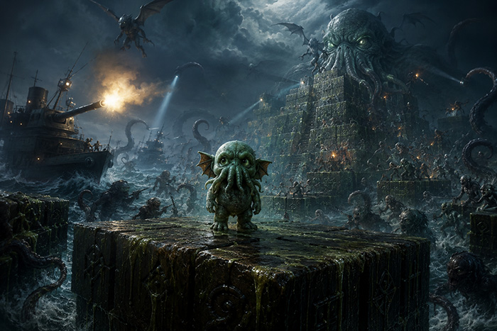

In the lightless depths of the South Pacific, far beneath the shipping lanes charted by mortal navigators, there lies the drowned city of R'lyeh — a place of impossible geometry where angles refuse to obey the laws of Euclidean space and the very stones seem to breathe with a malevolent sentience older than the Earth itself.
At the heart of this sunken necropolis rises a great pyramid of non-Euclidean design, its surfaces shifting between dimensions in ways that would shatter a human mind. Upon its alien steps, the geometry folds and refolds in patterns that suggest both staircase and labyrinth, both altar and prison. It is here, in the shadow of Great Cthulhu's eternal dreaming, that the smallest of the Star-Spawn was born.
Q*thulhu is a hatchling — diminutive, bright-eyed, and possessed of a curious nature wholly at odds with the cosmic dread of its lineage. Where its elder kin slumber in deathless patience, Q*thulhu hops and explores, driven by an instinct it cannot name: to touch every surface of the great pyramid, to leave its mark upon each impossible cube of ancient stone.
But R'lyeh is no safe nursery.
Great Cthulhu stirs in its death-sleep below, and the disturbance sends massive tentacles groping upward through the pyramid's foundations. These appendages erupt without warning through the cube-faces, grasping blindly for anything that moves upon the sacred geometry. The hatchling must read the tremors in the stone and leap clear before the tentacles breach the surface.
The Deep Ones — those fish-faced servants of the dreaming god — patrol the pyramid in mindless devotion, hopping downward through the cubes in predictable patterns. They mean no specific harm to the hatchling, but their bulk and their claws make contact fatal nonetheless.
More troubling are the Mi-Go — the fungoid things from Yuggoth who descend upon R'lyeh in their strange craft, harvesting specimens for their incomprehensible experiments. They arrive from impossible angles, buzz erratically across the pyramid's face, and depart as suddenly as they came. Their movements follow no logic that terrestrial minds can parse.
The Cultists are perhaps the most insidious threat. These robed figures, human in origin but long since maddened by forbidden knowledge, have learned to traverse the sunken city through dark rituals. They hop across the pyramid undoing Q*thulhu's work — reverting each transformed cube back to its dormant state, erasing the hatchling's progress with fanatical devotion to keeping R'lyeh unchanged.
Along the pyramid's edges, the Baby Shoggoths ooze and crawl. These protoplasmic horrors cling to the vertical faces of the cubes, moving in a reality rotated ninety degrees from the hatchling's own. They cannot be reasoned with, cannot be predicted — they simply are, sliding along surfaces that Q*thulhu must avoid.
And from the waters beyond the pyramid, the crew of the Alert — that ill-fated vessel whose sailors stumbled upon R'lyeh in 1925 — fires their cannons at the ancient structure. Whether they aim at the hatchling or at the city itself matters little; their iron shot strikes the cubes with explosive force, and anything caught in the blast is destroyed.
Yet not all of R'lyeh's denizens wish the hatchling harm. The Night Gaunts — those faceless, tickling horrors that serve no master — hover at the pyramid's edges, offering escape to any creature bold enough to leap into their rubbery arms. They carry the hatchling aloft in great swooping arcs, depositing it safely atop the pyramid before vanishing into the dark waters above.
And scattered rarely upon the cubes, the Elder Signs appear — ancient wards of protection that freeze all threats in place and grant the hatchling a brief window of terrible power. For those few seconds, the hunter becomes the hunted, and even the tentacles of Great Cthulhu itself can be banished back to the depths.
Why does Q*thulhu hop? What compels it to transform each cube from dormant stone to eldritch purple? Perhaps it is marking territory. Perhaps it is performing an unconscious ritual. Perhaps, in its small and alien way, it is trying to wake its sleeping parent.
Whatever the reason, the pyramid awaits.
The geometry hungers.
And the hatchling must hop.
Based on The Call of Cthulhu by H.P. Lovecraft (1928)
← Back to Game